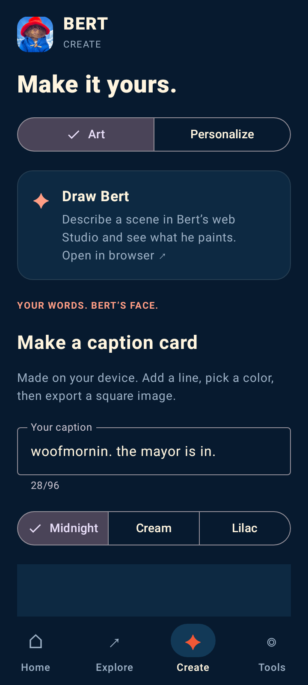
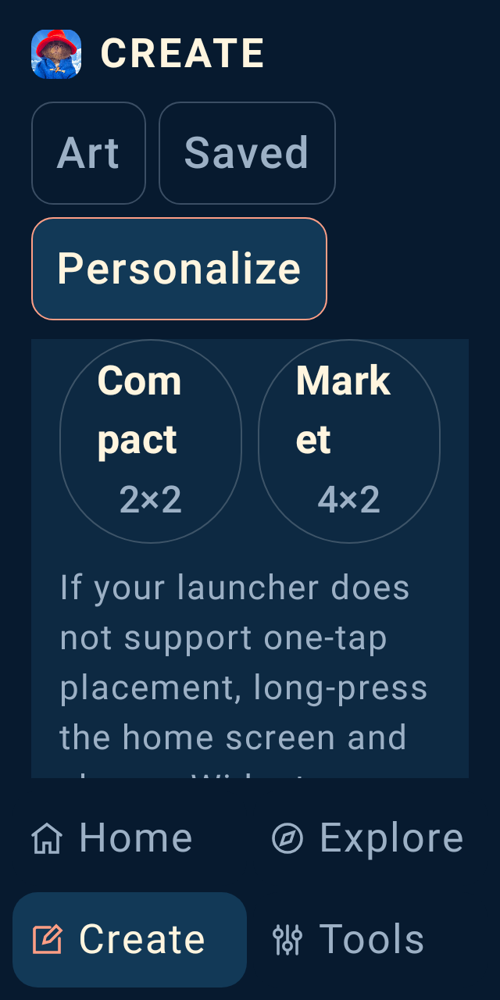
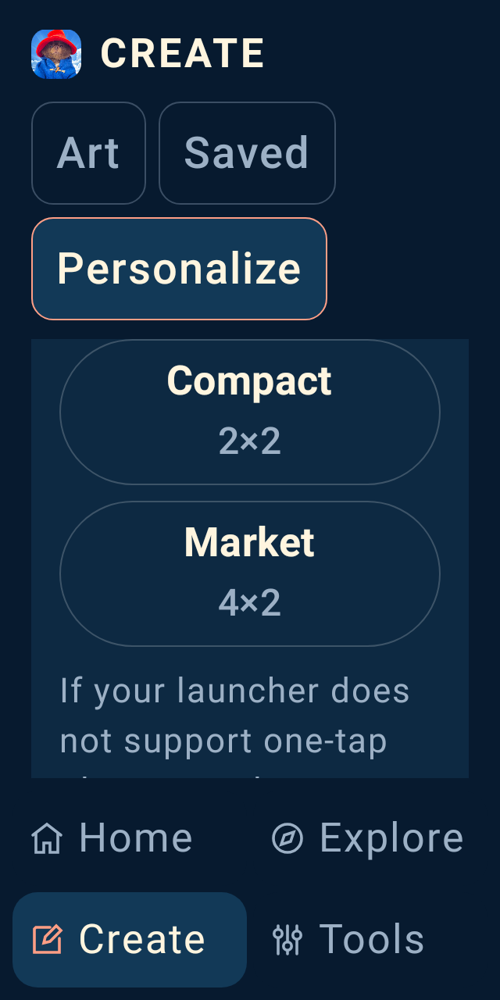
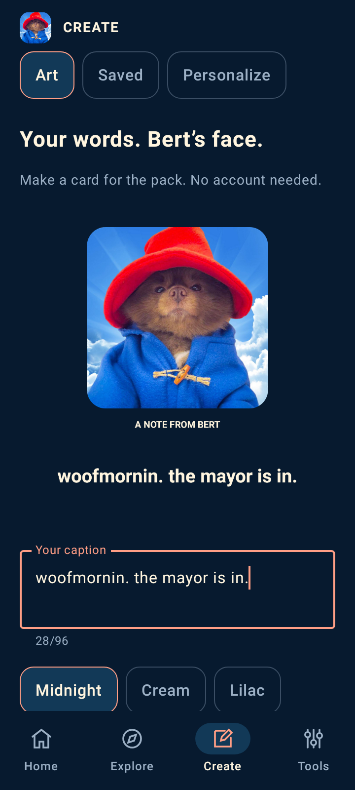
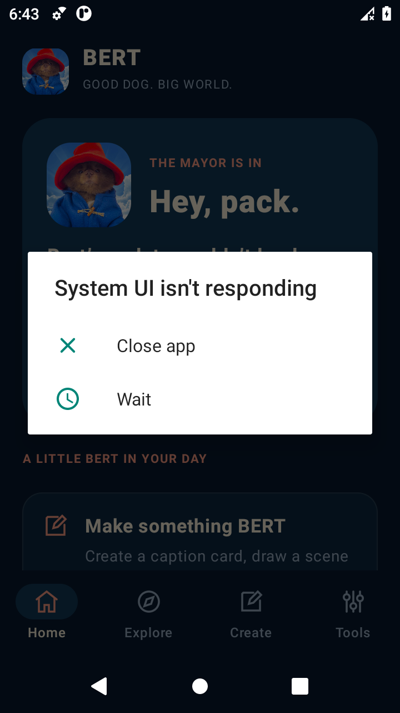

BERT · LOCAL APP REVIEW · 8 SEPTEMBER 2026
A BERT app with room for the whole pack.
The app now has a general Home / Explore / Create / Tools structure, useful offline creation, a private saved collection, readable navigation and honest feedback when actions fail.
Device review is still open. The screen gallery uses actual Compose host renders with deterministic fixtures. The native attempt below installed an earlier preview but encountered a System UI ANR. Phone performance, TalkBack, launcher behavior and delivery to a share recipient remain unverified.
50 + 8Android and service tests passed
211–531 dpFull creation preview in the first viewport
2× textNavigation labels fit measured bounds
Explore the current screens
 360×800 dp · xhdpi · Robolectric / API 35 · source e560604
360×800 dp · xhdpi · Robolectric / API 35 · source e560604
Native creation leads.
The whole 320 dp artwork preview fits above navigation on arrival. The caption is editable, three palettes are available, and an explicit save keeps the original PNG privately.
Normal-size captures use font scale 1. Large-text captures simulate linear 2× scaling; actual Android text scaling and keyboard behavior remain device checks.
Exact results and capture hashes · Navigation measurements
The largest visible correction
Originally, Create led with an external web tool and pushed its native preview below most of the first viewport. The current layout puts the user's artwork first and keeps section navigation available while scrolling.
Before · preview starts at 659 dp

Source 5c1083d. Host UI tests passed; that attempt's full gate was interrupted during lint.
Current · preview starts at 211 dp
Source e560604. Full development and preview gate passed; phone journeys remain open.
Compact screens: readable control labels
320×640 dp at linear 2× text. “Compact” and “Market” previously split inside words. Larger-text actions now stack across the available width. Both names, “Apply both” and “Home only” fit on one line; all measured action targets are at least 48 dp.
Before · words split

Source c8d418d. A clipping-only test passed; the capture exposed the inadequate criterion.
Current · labels stay intact

Source e560604. Stronger single-line and target-size assertions pass.
Compact measurements · Wallpaper actions at 2× text
Mayor Purple’s small negative-change widget text improves from 4.38:1 to 4.66:1. The color check covers 34 declared text/surface pairs against fixed contrast thresholds; it does not certify every state, artwork or physical display. Exact color measurements · Reproduced baseline failures
A paste should not silently disappear
The same 102-character text replacement previously left the old caption in place with no explanation. The revised editor keeps the draft, explains the limit and resumes preview/save/share after correction. The 96-character limit also accepts 96 paw emoji.
Before · old caption remains

Source bb880f9. Both long-caption and emoji-limit regression tests fail.
Current · draft and clear feedback
 Source e560604. Draft retention, correction and Unicode storage tests pass.
Source e560604. Draft retention, correction and Unicode storage tests pass.
Oversized-paste feedback at 2× text · Notice and viewport bounds · 96-emoji boundary capture
The entire large-text notice fits inside its measured scrolling viewport at 320×640 dp. These checks use Compose text replacement; physical keyboards, OS clipboard behavior and TalkBack remain device tests.
Native attempt: installation passed, journeys blocked

Actual API 30 software emulator · 360×640 dp · preview APK from 7a54a05
Android booted in 208.82 seconds and installed the preview in 106.22 seconds. Empty private storage and disabled network settings were confirmed.
A blocking System UI ANR prevented the navigation checks. This capture shows that BERT rendered, but it is not a passing app journey or proof of physical-device performance.
Native results · Capture provenance and limits